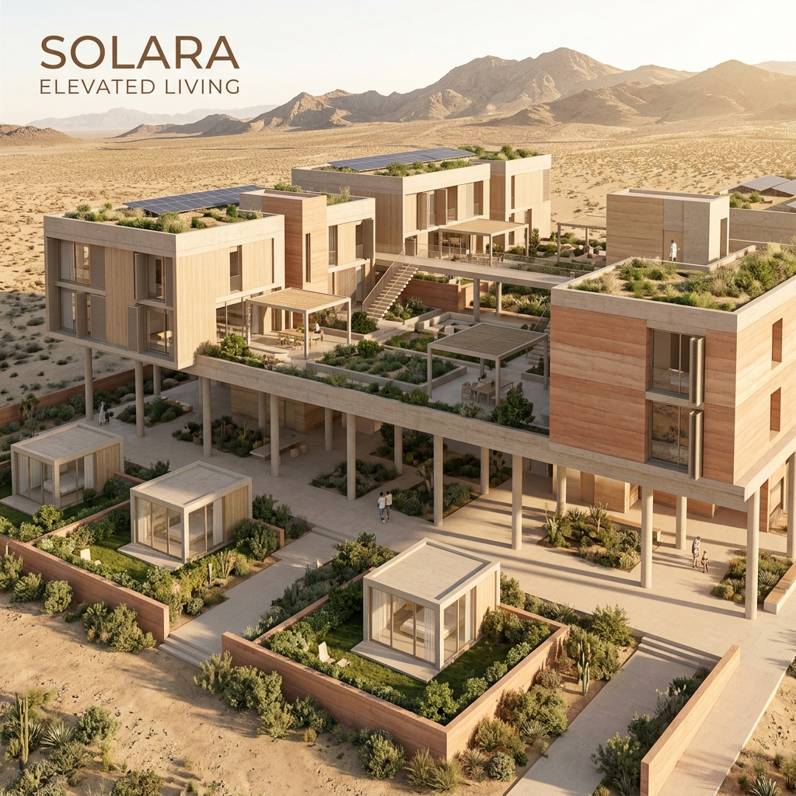
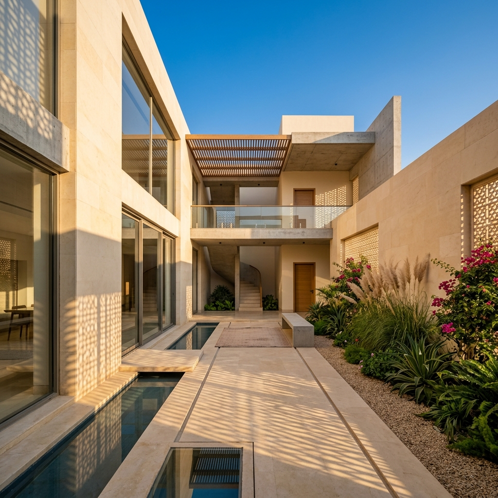
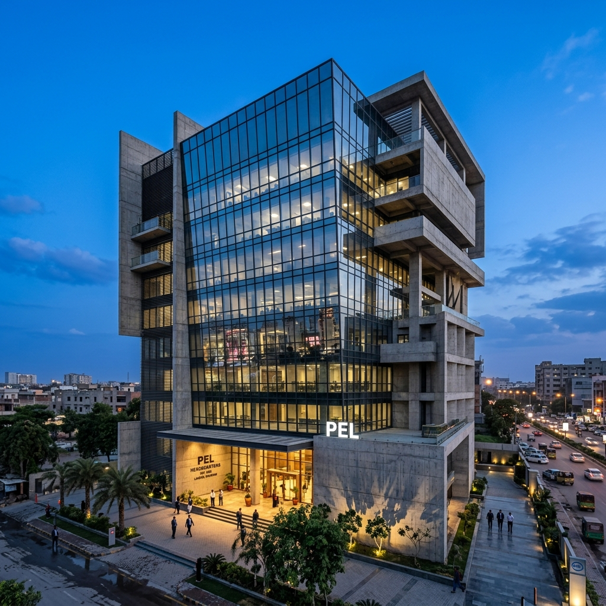
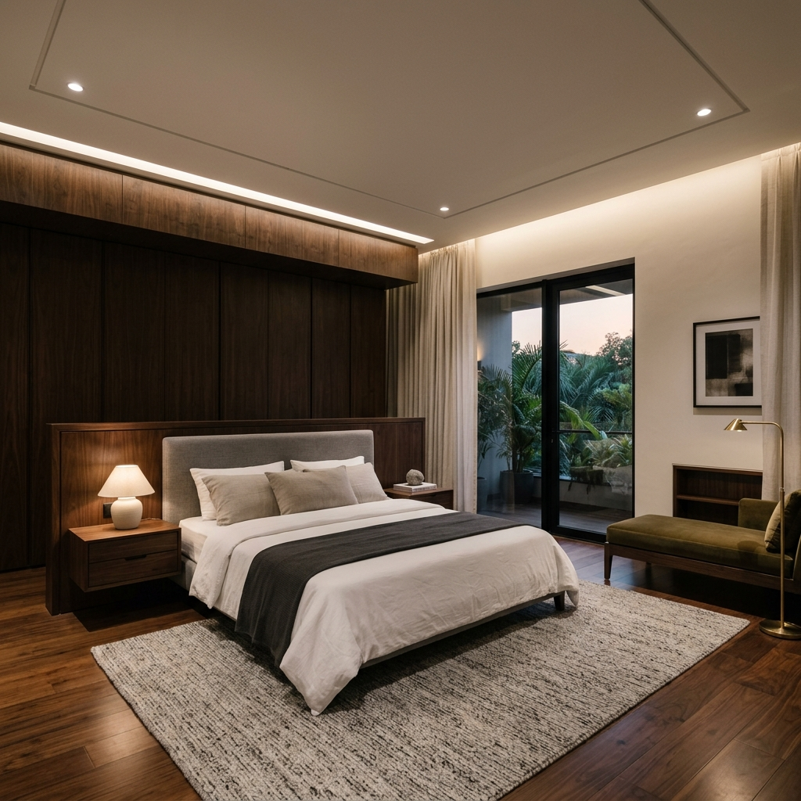
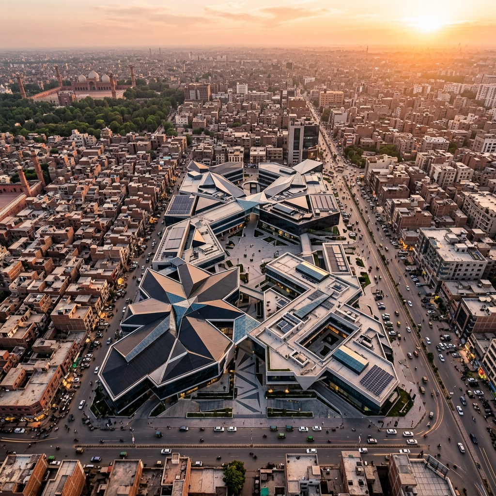

ConceptualPost Pandemic Architecture Space
How the pandemic permanently reshaped the way we think about residential space — from third-space additions and hierarchy shifts to communal terraces and the rethinking of the street itself.

In Lahore's intensely sun-drenched climate, light is not an afterthought — it is the primary building material. We explore how HumanToSpace uses orientation, void, and surface to sculpt spaces that breathe with the arc of the sun.

ConceptualHow the pandemic permanently reshaped the way we think about residential space — from third-space additions and hierarchy shifts to communal terraces and the rethinking of the street itself.
 Interior
Interior
Natural stone, rammed earth, and hand-trowelled plaster carry the weight of time. We examine why tactile materials make interiors more emotionally resonant.
 Landscape
Landscape
The chowk — Lahore's traditional courtyard — is having a modern renaissance. How HumanToSpace is reinterpreting this ancient typology for contemporary living.
 Conceptual
Conceptual
What if Pakistan's mega-cities were designed for climate resilience, cultural memory, and human-scale living? Our team sketches possible futures through speculative master planning and visionary urban design.

ArchitectureA rare inside look at how one of our most celebrated residential projects evolved from a napkin sketch to a 4,200 sqft built reality over 18 months.
 Studio Notes
Studio Notes
In an age of AI renderings and parametric software, our studio doubled down on analog sketching as the first step of every design. Here's why the hand still leads.
"Architecture is the learned game, correct and magnificent, of forms assembled in the light."— Le Corbusier

InteriorA curated look at how we select tones, pigments, and finishes — and why the warmth of Lahori terracotta keeps finding its way into our interiors.

LandscapeWhy planting native species isn't just an ecological decision — it's a design one. The beauty and logic of indigenous flora in Lahore's landscape architecture.
 Studio Notes
Studio Notes
From the Johar Villa to the Horizon Tower Concept, 2024 was the year the studio found its definitive voice. A reflective dispatch on what we built, learned, and discarded.